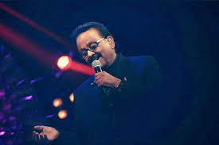

| Birth Name | Sripathi Panditaradhyula Balasubrahmanyam |
|---|---|
| Born | 4 June 1946 Nellore, Madras Presidency, British India(present-day Andhra Pradesh) |
| Died | 25 September 2020 (aged 74) Chennai, Tamil Nadu, India |
| Genres | Playback singing |
| Occupatoin(s) | Singer,actor,music,director,voice,actor,producer |
| Years Active | 1966–2020 |
| Honours | Padma Vibhushan (2021) (Posthumously) Padma Bhushan (2011) Padma Shri (2001) |
Sripathi Panditaradhyula Balasubrahmanyam (4 June 1946 – 25 September 2020), also referred to as S. P. B. or Balu, was an Indian musician, playback singer, television anchor, music director, actor, dubbing artist, and film producer who worked predominantly in Telugu, Tamil, Kannada, Hindi, and Malayalam films.
He won six National Film Awards for Best Male Playback Singer for his works in four different languages; Telugu, Tamil, Kannada, and Hindi; 25 Andhra Pradesh state Nandi Awards for his work in Telugu cinema, and numerous other state awards from Karnataka and Tamil Nadu.
In addition, he won the Filmfare Award, and six Filmfare Awards South.According to some sources, he held the Guinness World Record for recording the highest number of songs by a singer with over 40,000 songs. He recorded 21 songs in Kannada for the composer Upendra Kumar in Bengaluru from 9 am to 9 pm on 8 February 1981. In addition, he recorded 19 songs in Tamil and 16 songs in Hindi in a day, which has also been called a record. In 2012, he received the state NTR National Award for his contributions to Indian cinema. In 2016, he was honoured with the Silver Peacock Medal as Indian Film Personality of the Year. He was a recipient of the Padma Shri (2001) and Padma Bhushan (2011) from the Government of India.
On 25 September 2020, he died in Chennai from post COVID-19 complications.
SPB has recorded 40,000 songs,across 16 languages, in his career of 50 years.